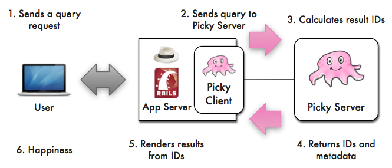

A very simple example with books (using 2 heroku servers).
A more complicated example with a telephone search.
A small-text search engine (web) service.
A full-text search engine. If you need that, look at Sphinx or Solr (Lucene). They will help.
A small-text search engine does not operate on huge blobs of text, but instead on smaller, highly categorized text amounts. For example, on varchar database fields.
If your data isn't categorized well (like text from a book), then you should instead choose one of the above full-text search engines.
Picky helps your user find data which in a full-text search engine would be buried in a heap of results. Also, it lets him do so with a Google-y single search field.
Sure the word "peter" is found most often in document #7, but he actually just wants documents by someone with surname "Peter", and not everything related to peters.
Picky helps him refine his search by way of a comfortable interface to get exactly what he wants.
Full-Text search engines do one thing especially well: Making full (i.e. uncategorized heaps of) text searchable.
For small, highly categorized text, we simply need new ideas. Picky is one of them.
Ok, that was my elevator pitch ;)
Hoo boy.
Using a real telephone search as an example.
This was at the fantastic EuRuKo 2010 Conference in beautiful Krakow.
It's fast enough and the high level really helped understanding it as it evolved. There are some parts that have been written in pedal-to-the-metal C code.
This depends on many factors, but generally we recommend using Picky with a maximum of 120 million data points (we used it there). The area under 20 millions is probably best. Your mileage may vary, of course, depending on how many partial indexes you use etc.
Indexing is not too fast, and I'd be glad if it were faster. However, you get the full power of Ruby and fully customizable indexing.
Picky lives in a little cave called The Github Repo . He usually pays his rent on time.
Glad you asked. But first, read this Wikipedia entry about octopuses. Also, a movie. Finished? I think that sums it up pretty well. And it's cuuute, don't you think? :)
But don't call him that. He likes to be called "Octor the Destroyer".
My former employer and I met halfway, so to speak. I'd have preferred a MIT license.
TwixTel Telephone Book Search Engine
Glad to hear it!
This takes about 10 minutes. After that, you'll have a running Picky server and a web frontend to play with.
Before we start, the big picture:
That's the basic setup. The things to remember are:
Together they are like a small A-Team, something like "Action Search Squad Alpha"! «We've got the results and are heading back to base now, Sir!» Bam!
Note that Picky only runs on Ruby 1.9.
gem install picky picky-client
The server generates a library example, which you can run right away.
# Generates a directory "app_name"
# with a new Picky project.
picky project app_name
cd app_name
bundle install
rake index
rake start
curl localhost:8080/books/full?query=test
Don't worry about the strange looking results! The next part (client) will take care of them.
If you're interested anyway: Results (Format & Structure)
The client generates an example app for the "library" example backend, either using Sinatra or using Rails 3.
If you like Sinatra better, use
picky-client sinatra app_name
and if you like Rails better, use
picky-client rails app_name
And then
cd app_name
bundle install
unicorn -p 3000
Go to http://localhost:3000/ and try the examples.
You're probably itching to change the example for your own data. How do you do this?
In the server directory, just type
rake
and it will tell you where to change the server configuration.
Go to http://localhost:3000/configure and the page will show you how to configure your app server.
Right here. I'm happy to help! If something doesn't work, send/gist me your application.rb and I'll look into it.
github (floere), twitter (hanke), mail (gmail)
There's a Wiki as well: Picky Wiki
Note: Still to be done.
This column describes using a few examples how to set up a client and a front end for the picky server, described in the right column.
The examples assume you're using a Sinatra/Padrino or Rails app.
Start by getting the picky-client gem and adding it to your Gemfile. You could go on without it but it helps a lot.
gem install picky-client
gem 'picky-client'
Don't forget to do a
bundle update
And that's already it for the client setup! Easy, isn't it? The configuration isn't much harder.
This column describes using a few examples how to set up the picky server. You can actually read both columns back and forth if you want. Like ping pong. Played by two chinese master ping-pong pandas. (Not by me, then you'd already stop at gem install)
It starts out the same as in the Getting Started section. But this time, we do an actual example picky project called library_search. For that, we use the
picky project <project name>
command that has been installed with the picky gem.
gem install picky
picky project library_search
cd library_search
bundle install
You now have a nice directory (library_search) set up with all the needed Gems, ready to go!
What characters pass through, which words are removed (stopwords), how is the text tokenized, i.e., split?
# In app/application.rb, find this stub
# and adapt the examples.
#
indexing.removes_characters(/[^a-zA-Z0-9\s\/\-\"\&\.]/)
...
It's easy. If you have a filled database table ready, it's even easier.
# In app/application.rb, find this stub
# and adapt the examples.
#
# Indexes have an identifier, e.g., :books, a source,
# which is a database table, and a number of fields.
#
books_index = index :books,
Sources::DB.new(
'SELECT id, title, author, description FROM books',
:file => 'app/db.yml'
),
field(
:title, # identifier
:qualifiers => [:t, :title],
:similarity => Similarity::DoubleLevenshtone.new(3)
),
field(...After having defined the indexing, this is a piece of cake, since it works the same way.
# In app/application.rb, find this stub
# and adapt the examples.
#
querying.removes_characters(/[^a-zA-Z0-9\s\"\~\*\:]/)
...
Define a few queries.
# In app/application.rb, find this stub
# and adapt the examples.
#
# A full search returns ids, while a live search doesn't.
#
# The options define weights which will give bonus points
# to certain combinations. If only title words are found,
# a hefty bonus of 6 is given, which is very high.
#
# If a title is found before the author, like
# "the hobbit, tolkien", 3 points are awarded.
#
options = {
:weights => Query::Weights.new([:title] => 6,
[:title, :author] => 3)
}
full_search = Query::Full.new(books_index, options)
live_search = Query::Live.new(books_index, options)
# It's possible to use multiple indexes in a query.
#
multi_search = Query::Full.new(
books_index,
dvd_index,
mp3_index
)Phew! Almost done :)
# In app/application.rb, find this stub
# and adapt the examples.
#
# The method "route" maps URL paths to queries.
# Use regexps or strings to define paths.
#
route %r{^/tracks/full} => full_search
route %r{^/tracks/live} => live_searchFinally! Let picky have a look at the data!
rake index
rake start
will start an Unicorn.
# Assuming this URL path is mapped in app/application.rb.
#
curl localhost:8080/books/full?query=test
rake try:both[MyWordThatDoesNotWork]
Words to find should be indexed in basically the same way as the query processes them.
Define similarity searches, more specific indexes, more searches, etc.
1. An asterisk (*) makes picky search for a partial hit. (If the index supports that)
part*
also finds partial, party, partogenesology.
2. The last word in a query is always partially searched.
my beautiful query
is actually
my beautiful query*
3. Asterisk searches can be stopped.
"part"
only finds "part", and nothing else.
4. If you have defined a similarity index on a field, a tilde (~) will look for similar matches.
my beoootiful~ query
will also find your "beautiful" query.
5. Qualifiers can be used with a colon (:)
title:ulysses author:joyce
will narrow the search space to complex novels.
6. The above options can be combined.
name:flurion~ hank*
will find me.
That is all, young grasshopper. Be on your way.
The Picky client provides an API to access the server. It looks like this:
# The options define where the Picky server that
# you have already set up is found.
# (Haven't set it up yet – see the right column on
# how to do this, then come back here)
#
# Options are:
# * host # e.g. 'localhost'
# * port # e.g. 8080
# * path # e.g. '/books/full'
#
Picky::Client::<Full or Live>.new options
Usually, what I do is save the Picky client instance in a constant, like FullBooks, or BookSearch. This is so I can reuse that instance.
Since this configuration is environment specific, it is best – in Rails – to put it into development.rb / production.rb / test.rb.
# In development.rb:
#
FullBooks = Picky::Client::Full.new(
:host => 'localhost',
:port => 8080,
:path => '/books/full'
)
LiveBooks = Picky::Client::Live.new(
:host => 'localhost',
:port => 8080,
:path => '/books/live'
)
The FullBooks and LiveBooks constants are ready for use in your controller actions!
The most important file in your project is app/application.rb
It defines how all the indexing and the searching is handled, and even the routing.
Now that you have defined the constants, let's use them!
# In a controller, e.g. the index action:
#
def index
# A Picky client has a search method with some options:
# * query: The query to be sent to Picky.
# * offset: An offset on the result ids. # Default is 0.
#
results = FullBooks.search :query => 'hello picky'
If the server is running, just try it! The results should be a hash with the result data.
Now, this is nice, but not very useful, is it? Picky can make that hash a bit more accessible with Picky::Convenience™.
# Still in the controller action:
#
results = FullBooks.search ...
# Make the hash a bit more self-aware.
#
results.extend Picky::Convenience
# Now you get:
#
results.empty?
results.ids 10 # First 10 ids. Default is 20.
results.clear_ids # Remove all ids.
results.allocations
results.allocations_size
results.total # The total amount of found ids.
# The method I use most often is
# populate_with, as this populates the results
# with rendered results (using the ids), not
# just the ids themselves.
#
# Note: Also clears the ids with clear_ids.
#
results.populate_with Book do |book| # The model.
book.to_s # How to render the model.
end
# If you use the provided Picky JavaScript frontend,
# then encode it in JSON before sending it off.
#
ActiveSupport::JSON.encode results
And that was it for the controller. It looks large, but when reduced to the essential lines, it is just this:
# In an initializer or environment.
#
FullBooks = Picky::Client::Full.new ...
LiveBooks = Picky::Client::Full.new ...
# In a controller action.
#
results = FullBooks.search ...
results.populate_with Book { |book| book.to_s }
ActiveSupport::JSON.encode resultsUnbeatably easy, right?
I need to finish writing it first, but see the simple example for some code on how to do it. (Also get the javascripts from there until I provide them more nicely.)